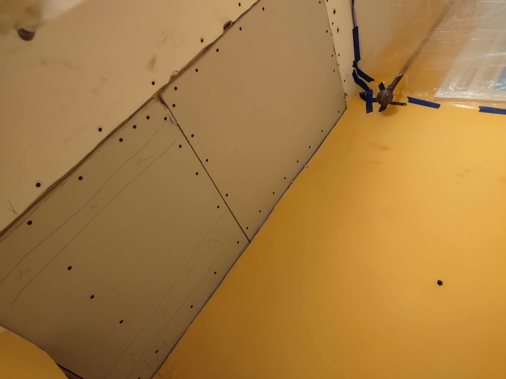
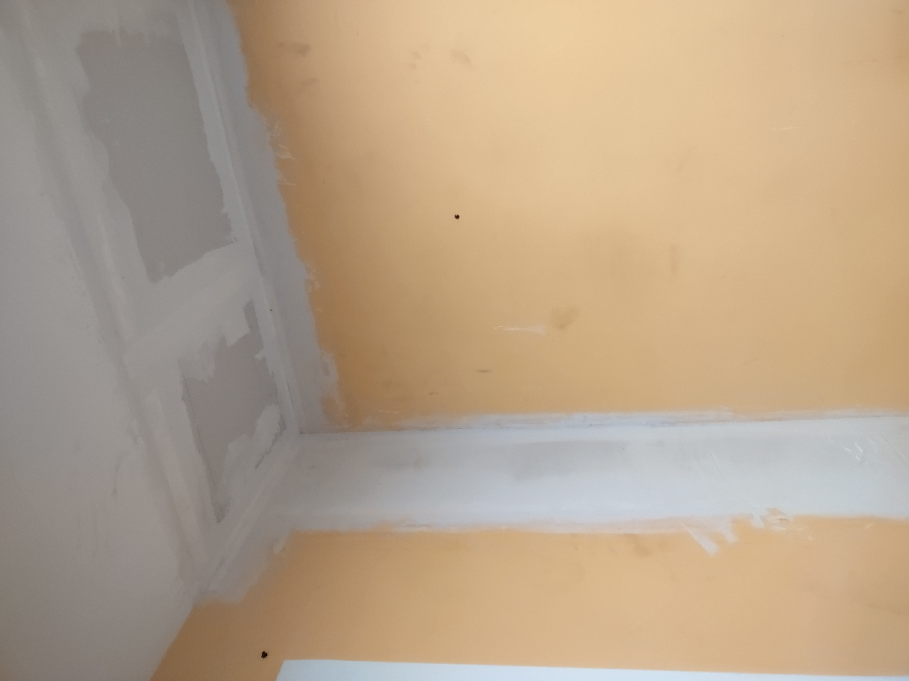
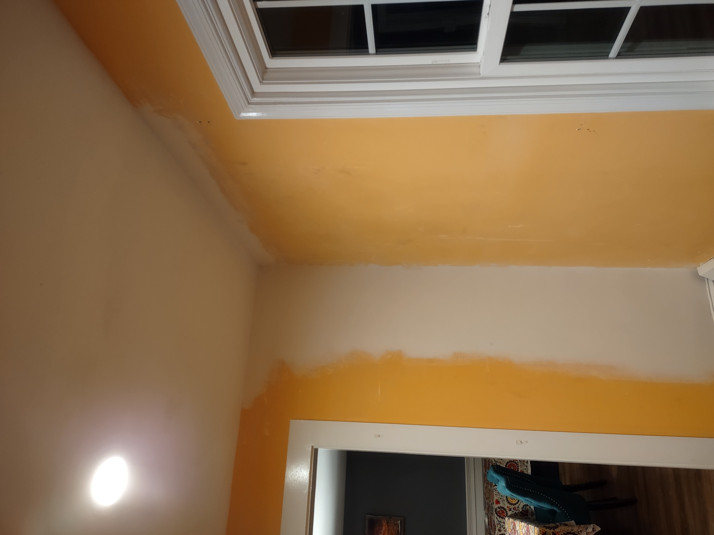
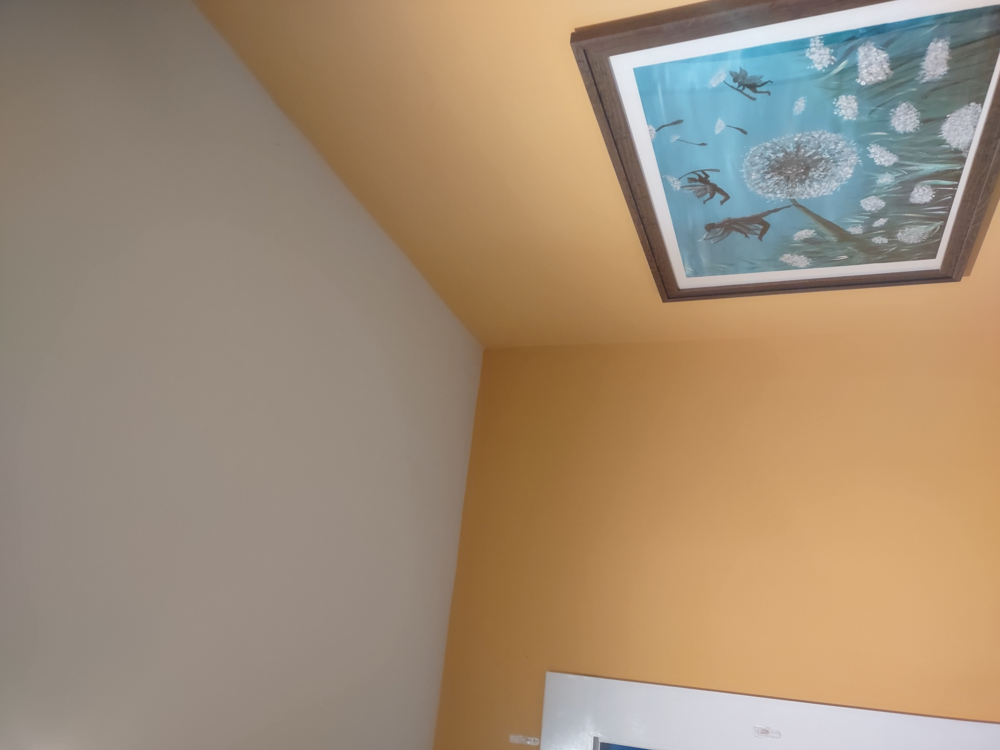

Peters Drywall and Paint
Residential drywall repair and interior painting
Serving King of Prussia and Surrounding Area
Restoring your home to its orignal condition
Services
Drywall Repair
Small Holes
Large Holes
Cracks
Water Damage
Bulging Seams
Sections of Drywall
Interior Paint
Room Painting
Trim Repair
Trim Painting
About Us
Experienced in residential drywall repair. I have spent many years repairing damaged drywall. My focus has always been producing a professional finish. I have experience repairing nail pops, dings and hole, cracks, water damage, replacing drywall. Then painting the room once all the wall and trim are ready.
Drywall Repair Journey

Drywall installed after exsisting structure is sound, so no further cracking or damage will occur
Seams and corners filled and taped, creating a strong repair which will last


Final coats applied, creating a seamless finish to apply primer and paint
The final finished product, where the repair blends in with the surrounding walls and ceiling

Contact
If you have any questions or would like a quote, please send me note.
julian.peters@petersdrywall.comI look forward to hearing from you!